| 日付 | 2012年3月3日（土） |
|---|---|
| 山域 | 丹沢 |
| メンバー | 家族（妻、長女・1歳） |
| 山行形態 | 子連れ日帰り |
| アクセス | 車 |
| ルート (Map) | 大磯町役場→高麗山→湘南平→こゆるぎの浜→大磯町役場 |
神奈川県の南部、相模湾と面した場所に高麗山という山がある。
取るに足らないような小さな山なのだが、以前から少し気になっていた。
曇予報が直前になって好転した週末の土曜日、
準備不足であまり遠出する気にもならないので、
この機会に近場の高麗山に行ってみることにする。
9:22 大磯町役場到着。標高10m。
町役場は有料駐車場になっていて、1日300円で車を停めることができる。
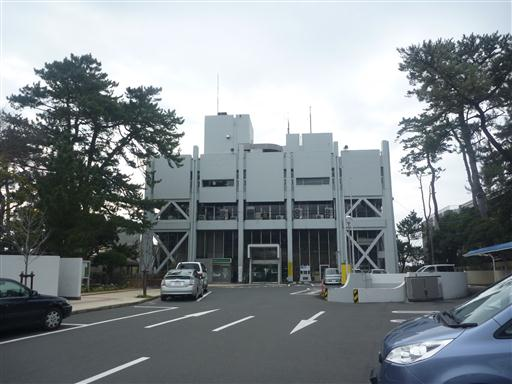
ガイドブックでは大磯駅が起点になっていたため、まずは大磯駅に向かう。
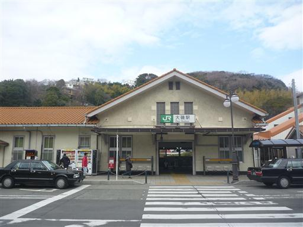
線路に沿ってしばらくは車道を歩く。辺りは大きな戸建て住宅が多い。
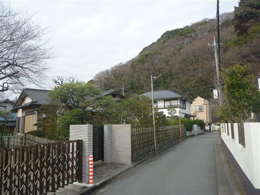
住宅街の背後に高麗山が見えてくる。山というより丘だ。
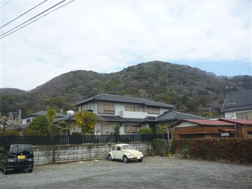
高麗山登山道入口にある高来神社に到着する。
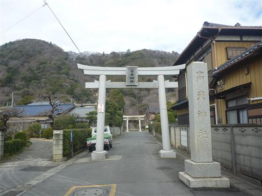
鳥居の側の狛犬。子供の狛犬がかわいらしい。
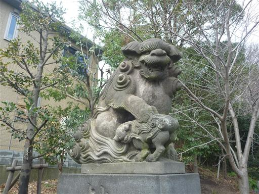
高来神社。別名、高麗神社とも呼ばれ、高句麗からの渡来人に由来すると言われている。
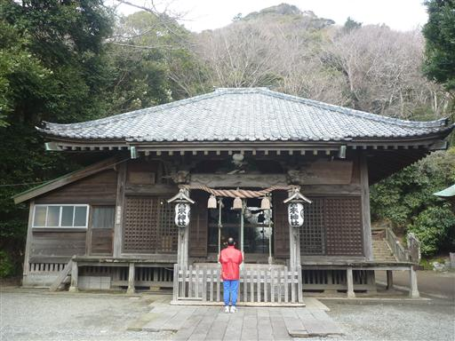
神社の奥から高麗山への登山道に入っていく。
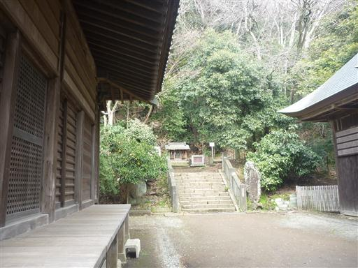
登山道入口付近で道は男坂と女坂に分岐する。
男坂を選択すると、いきなりの急登が始まる。
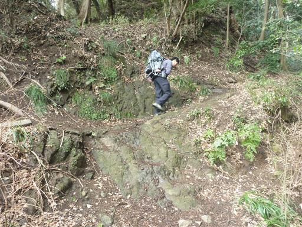
石碑が一枚倒れている。
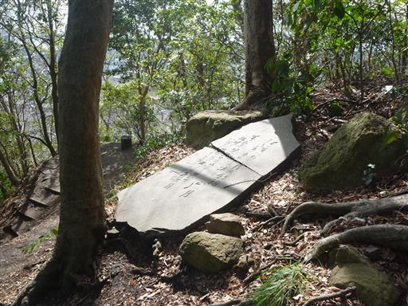
辺りは常緑広葉樹が生い茂っている。
大きな木が多く良く自然が残っている。
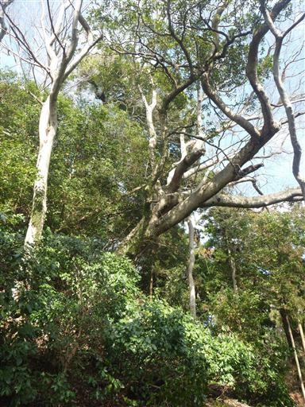
山頂直下の古い石段を登っていく。
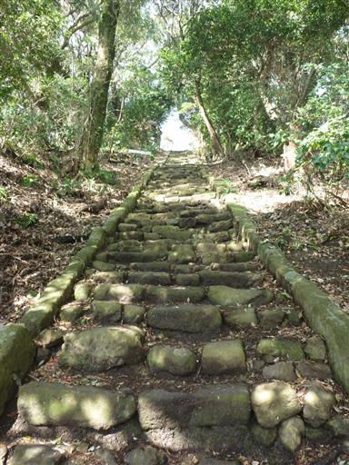
10:30 高麗山山頂到着。標高167m。
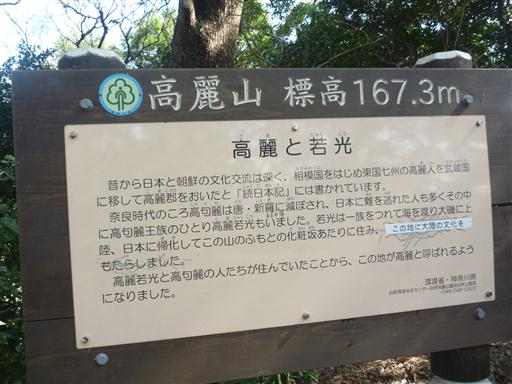
山頂は大きな広場のようになっている。残念ながら展望はない。
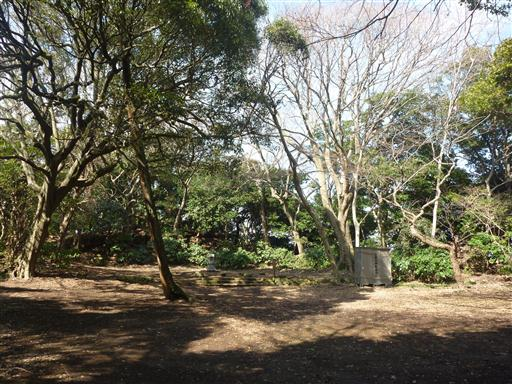
高麗山から湘南平に向けて尾根道を歩いていく。
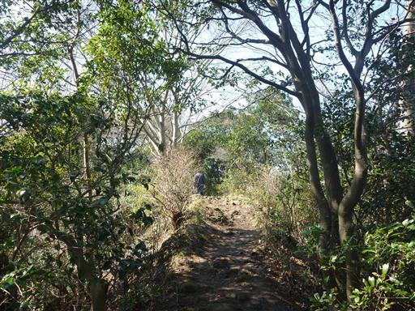
八俵山に到着。湘南平までにはいくつかの小ピークを越えていく。
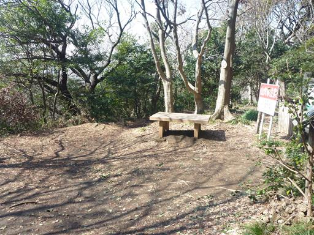
この山の樹種は豊富だ。いくつかの木には名札がついているので、木の勉強になる。
タブノキ、ケヤキ、クヌギ、モミなどなど、よく知られた木の名前が見つかる。
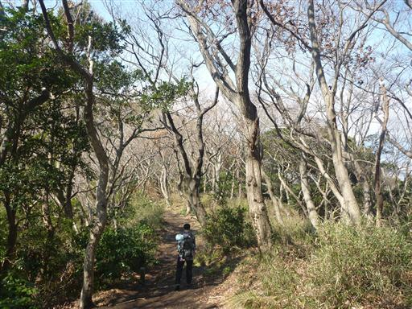
道にせり出している木の幹を利用して、良く目立つところに火事注意と書かれている。
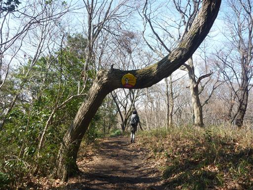
途中尾根が広くなり、辺りは草原と広葉樹林が広がる。
標高100mそこそこの尾根とは思えない美しい場所だ。
人通りがそれほど多くないのか、この辺りの踏み跡は案外細い。
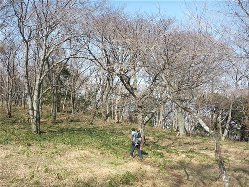
展望は開けないが、頭上には青空が広がっていて気持ちが良い。
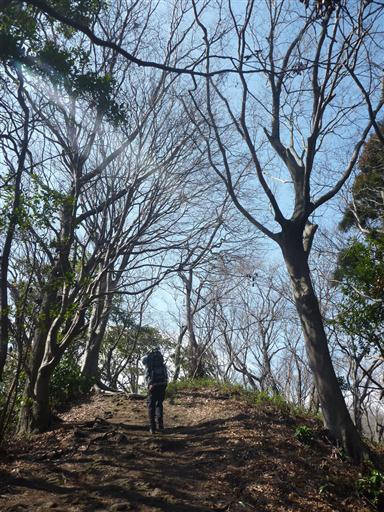
一本でも筋を間違えれば路頭に迷いそうな地図。
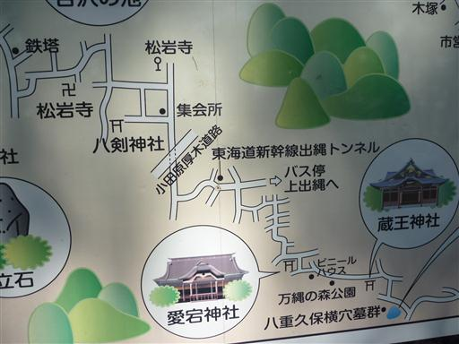
11:11 浅間山山頂到着。標高181m。
山頂にはテーブルとベンチが用意されている。
湘南平で昼食をとる予定だったが、ここの方が雰囲気がよさそうなので、
こちらで昼食をとることにする。
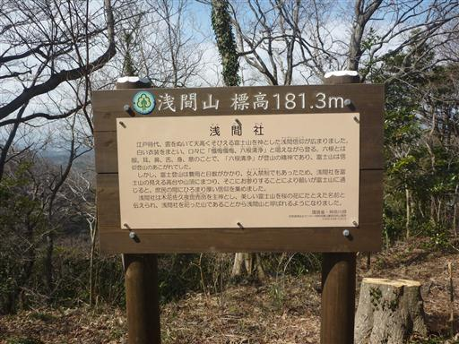
この山頂には一等三角点が設置されている。しかし展望はあまり良くない。

立派なヤツデの花が咲いている。
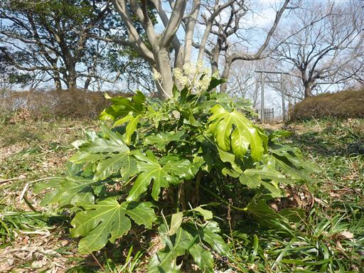
浅間山で昼食をとった後、湘南平に向かう。
大きな木の枝が一本折れて登山道をふさいでいる。見た感じ折れたのは最近のようだ。
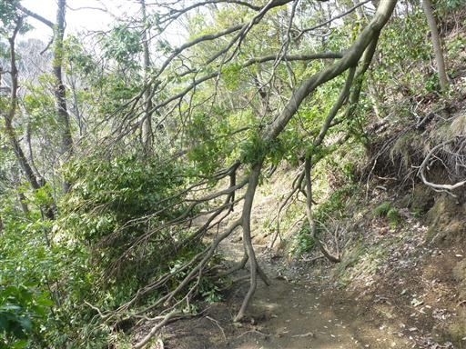
湘南平に近づくにつれて、だんだんと公園風に整備されてくる。
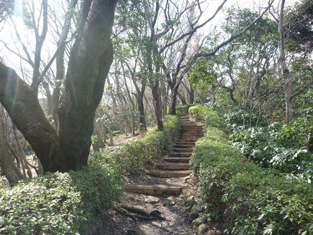
12:31 湘南平到着。標高181m。
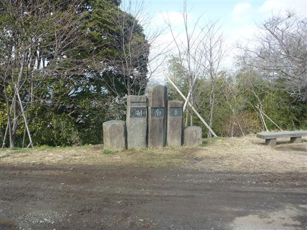
山頂には大きな鉄塔が建っている。
ここまでは車で来ることができるため、観光客もちらほら見られる。
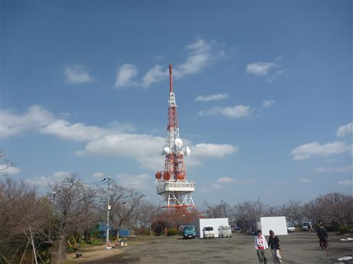
鉄塔には途中まで登れるようになっている。
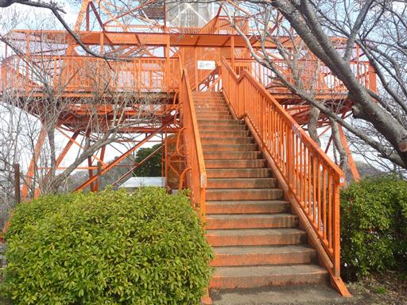
鉄塔の中は落書きだらけだ。お世辞にも雰囲気が良いとは言えない。
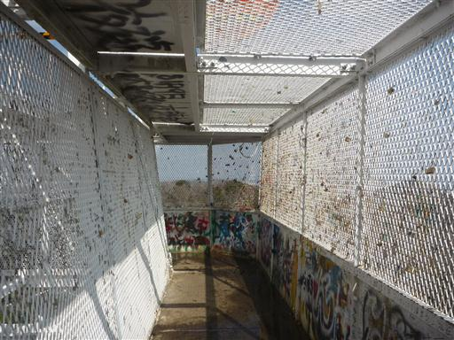
カップルでここに来て錠を金網につけて鍵を捨てると、そのカップルは別れないという風説があり、
そのため錠がたくさんつけられている。
しかし、何年かに一度は全ての錠が切断され撤去されるらしい。
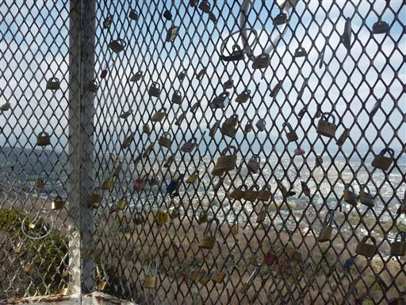
鉄塔の雰囲気はいまいちだが、展望は素晴らしい。
目の前には相模湾が広がっている。青空が出てきたので海が青く光っている。
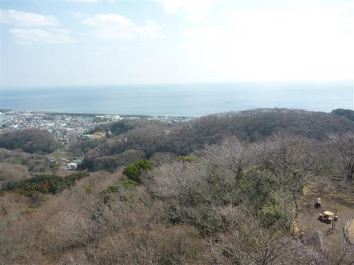
歩いて来た高麗山方面を望む。町の中にある小さな丘陵であることがよく分かる。
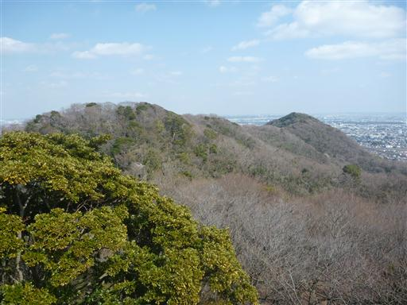
湘南平には大きな広場があって、ベンチやテーブルが設置されている。
まわりは桜の木で、花が咲くころには大勢の人で賑わうらしい。

桜の季節にはまだ早いが、一足早く梅の花が咲いている。
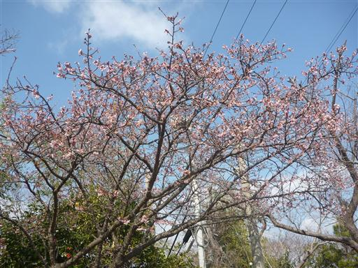
山頂に建つレストハウス。ここの展望台からも素晴らしい景色が広がる。
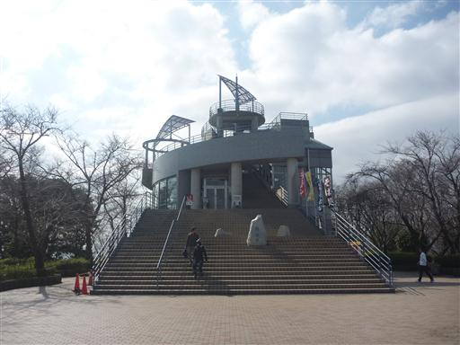
北方に丹沢山塊を望む。ここは丹沢山塊の絶好の展望台だ。
残念ながら今日は雲が出ていて、右端の大山しか見えない。
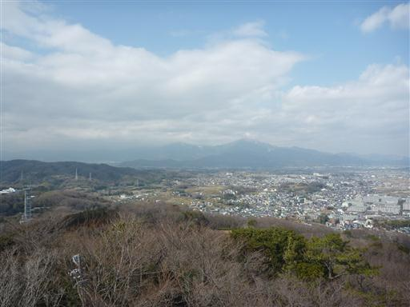
下山を開始する。所々に駐車場が設置されている。
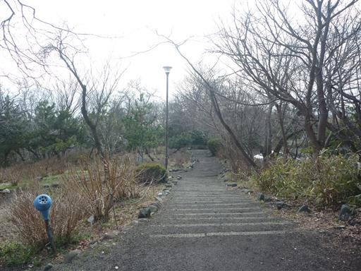
最後の駐車場を過ぎると、再び登山道は自然林に包まれる。
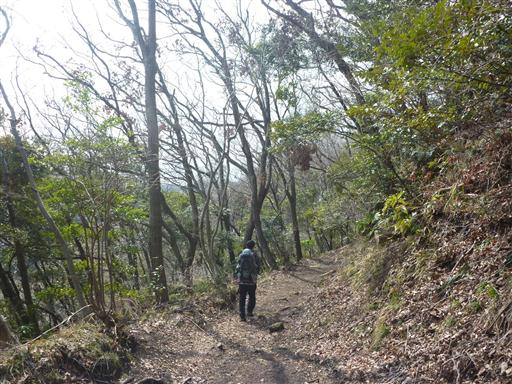
標高の低い山なので、下山はあっという間だ。
集落の最深部には趣向を凝らした家が数件建っている。
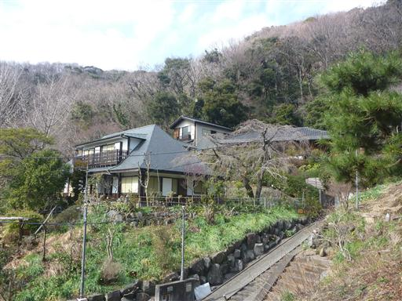
こちらの家も凝った造りだ。
自然が豊かで比較的便利なこの場所は、自然好きの金持ちが集まるのかもしれない。
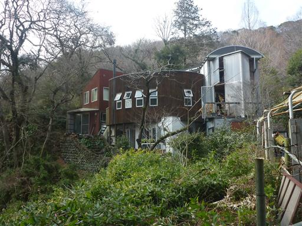
下山後、こゆるぎの浜に寄っていくことにする。
国道の下を通るトンネルに入っていく。
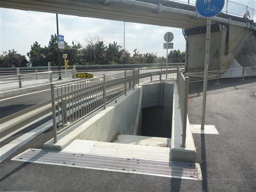
トンネルを抜けると、そこには青い海が広がっている。
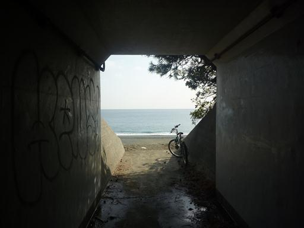
こゆるぎの浜。非常に長い砂浜だ。
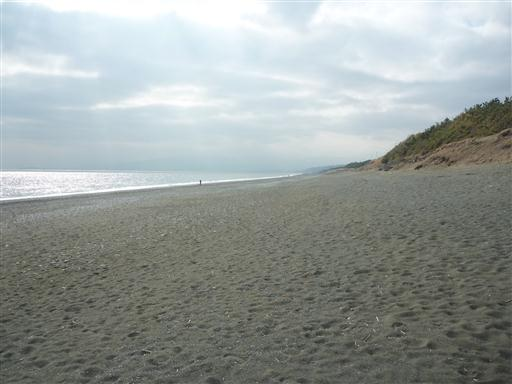
冬だからか思った以上に海がきれいだ。しばらく海とたわむれる。
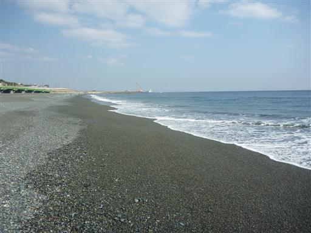
テトラポッドに登ってみる。
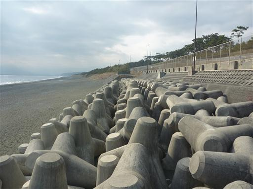
14:18 大磯町役場到着。
小さいながらも美しい自然が残されている素晴らしい山だった。
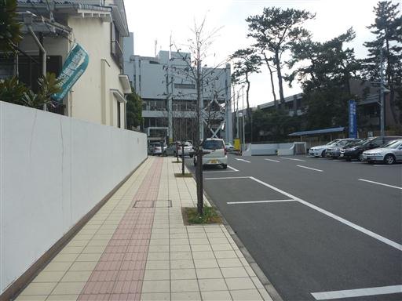